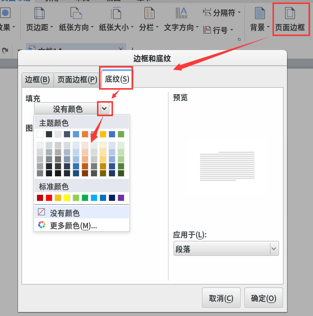

第2课 学会页面设置
0、窗口分两半，火狐1/3，wps 占2/3
1、点左上角“活动”，搜索 wps ，点击出来的蓝色图标；
2、关闭不用的标签，点加号“+”新建；
3、点面板“页面布局 - 纸张大小 - 横向”，纸张变成横向了；
4、再点“纸张大小 - 16开”，16开是一张小纸；

5、再点“页面边框 - 底纹 - 填充颜色”，给文字加上底色；

6、回到开始面板，设置思源黑体，二号，彩色，
输入下面的文字；
7、选中快乐，点“居中”，选中正文，点右键，设置首行缩进，1.5倍行距；

12、点左下角的“本地文档”；
13、上边文件名改成“第02课”，小数点后面不要动，
左边找到主文件夹，找到自己的7-3文件夹，保存，多点几次；
14、最小化，然后点“活动 - 文件”，打开自己的文件夹，
等老师检查完，再关闭窗口；
本节学习了的基础知识，如果你成功地完成了练习，请继续学习下一课内容；
返回目录 下一课
本教程由TeliuTe制作|著作权所有
基础教程网：http://teliute.org/
美丽的校园……
转载和引用本站内容，请保留作者和本站链接。